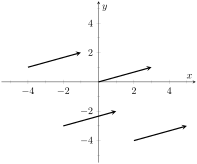
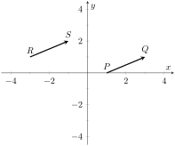
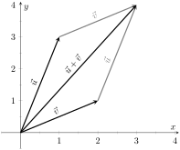
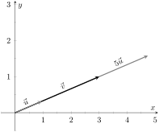
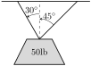
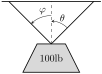
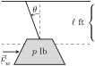

Many quantities we think about daily can be described by a single number: temperature, speed, cost, weight and height. There are also many other concepts we encounter daily that cannot be described with just one number. For instance, a weather forecaster often describes wind with its speed and its direction (“\(\ldots\) with winds from the southeast gusting up to 30 mph \(\ldots\)”). When applying a force, we are concerned with both the magnitude and direction of that force. In both of these examples, direction is important. Because of this, we study vectors, mathematical objects that convey both magnitude and direction information.
One “bare-bones” definition of a vector is based on what we wrote above: “a vector is a mathematical object with magnitude and direction parameters.” This definition leaves much to be desired, as it gives no indication as to how such an object is to be used. Several other definitions exist; we choose here a definition rooted in a geometric visualization of vectors. It is very simplistic but readily permits further investigation.
Definition11.2.1.Vector.
A vector is a directed line segment.
Given points \(P\) and \(Q\) (either in the plane or in space), we denote with \(\overrightarrow{PQ}\) the vector from \(P\) to \(Q\text{.}\) The point \(P\) is said to be the initial point of the vector, and the point \(Q\) is the terminal point.
The magnitude, length or norm of \(\overrightarrow{PQ}\) is the length of the line segment \(\overline{PQ}\text{:}\)\(\norm{\overrightarrow{PQ}} = \norm{\overline{PQ}}\text{.}\)
Two vectors are equal if they have the same magnitude and direction.
Figure 11.2.2 shows multiple instances of the same vector. Each directed line segment has the same direction and length (magnitude), hence each is the same vector.

Figure11.2.2.Drawing the same vector with different initial points
We use \(\mathbb{R}^2\) (pronounced “r two”) to represent all the vectors in the plane, and use \(\mathbb{R}^3\) (pronounced “r three”) to represent all the vectors in space.

Figure11.2.3.Illustrating how equal vectors have the same displacement
Consider the vectors \(\overrightarrow{PQ}\) and \(\overrightarrow{RS}\) as shown in Figure 11.2.3. The vectors look to be equal; that is, they seem to have the same length and direction. Indeed, they are. Both vectors move 2 units to the right and 1 unit up from the initial point to reach the terminal point. One can analyze this movement to measure the magnitude of the vector, and the movement itself gives direction information (one could also measure the slope of the line passing through \(P\) and \(Q\) or \(R\) and \(S\)). Since they have the same length and direction, these two vectors are equal.
This demonstrates that inherently all we care about is displacement; that is, how far in the \(x\text{,}\)\(y\) and possibly \(z\) directions the terminal point is from the initial point. Both the vectors \(\overrightarrow{PQ}\) and \(\overrightarrow{RS}\) in Figure 11.2.3 have an \(x\)-displacement of 2 and a \(y\)-displacement of 1. This suggests a standard way of describing vectors in the plane. A vector whose \(x\)-displacement is \(a\) and whose \(y\)-displacement is \(b\) will have terminal point \((a,b)\) when the initial point is the origin, \((0,0)\text{.}\) This leads us to a definition of a standard and concise way of referring to vectors.
Definition11.2.4.Component Form of a Vector.
The component form of a vector \(\vec{v}\) in \(\mathbb{R}^2\text{,}\) whose terminal point is \((a,b)\) when its initial point is \((0,0)\text{,}\) is \(\la a,b\ra\text{.}\)
The component form of a vector \(\vec{v}\) in \(\mathbb{R}^3\text{,}\) whose terminal point is \((a,b,c)\) when its initial point is \((0,0,0)\text{,}\) is \(\la a,b,c\ra\text{.}\)
The numbers \(a\text{,}\)\(b\) (and \(c\text{,}\) respectively) are the components of \(\vec v\text{.}\)
It follows from the definition that the component form of the vector \(\overrightarrow{PQ}\text{,}\) where \(P=(x_1,y_1)\) and \(Q=(x_2,y_2)\) is
Using \(P\) as the initial point, we move 2 units in the positive \(x\)-direction and \(-1\) units in the positive \(y\)-direction to arrive at the terminal point \(P\,'=(5,1)\text{,}\) as drawn in Figure 11.2.6.(a). The magnitude of \(\vec v\) is determined directly from the component form:
One can readily see from Figure 11.2.6.(a) that the \(x\)- and \(y\)-displacement of \(\overrightarrow{RS}\) is 2 and 4, respectively, as the component form suggests.
Using \(Q\) as the initial point, we move 2 units in the positive \(x\)-direction, \(-1\) unit in the positive \(y\)-direction, and 3 units in the positive \(z\)-direction to arrive at the terminal point \(Q' = (3,0,4)\text{,}\) illustrated in Figure 11.2.6.(b). The magnitude of \(\vec u\) is:
Now that we have defined vectors, and have created a nice notation by which to describe them, we start considering how vectors interact with each other. That is, we define an algebra on vectors.
Definition11.2.7.Vector Algebra.
Let \(\vec u = \la u_1,u_2\ra\) and \(\vec v = \la v_1,v_2\ra\) be vectors in \(\mathbb{R}^2\text{,}\) and let \(c\) be a scalar.
The addition, or sum, of the vectors \(\vec u\) and \(\vec v\) is the vector
\begin{equation*}
\vec u+\vec v = \la u_1+v_1, u_2+v_2\ra\text{.}
\end{equation*}
The scalar product of \(c\) and \(\vec v\) is the vector
\begin{equation*}
c\vec v = c\la v_1,v_2\ra = \la cv_1,cv_2\ra\text{.}
\end{equation*}
Let \(\vec u = \la u_1,u_2,u_3\ra\) and \(\vec v = \la v_1,v_2,v_3\ra\) be vectors in \(\mathbb{R}^3\text{,}\) and let \(c\) be a scalar.
The addition, or sum, of the vectors \(\vec u\) and \(\vec v\) is the vector
\begin{equation*}
\vec u+\vec v = \la u_1+v_1, u_2+v_2, u_3+v_3\ra\text{.}
\end{equation*}
The scalar product of \(c\) and \(\vec v\) is the vector
\begin{equation*}
c\vec v = c\la v_1,v_2,v_3\ra = \la cv_1,cv_2,cv_3\ra\text{.}
\end{equation*}
In short, we say addition and scalar multiplication are computed “component-wise.”
Example11.2.8.Adding vectors.
Sketch the vectors \(\vec u = \la1,3\ra\text{,}\)\(\vec v = \la 2,1\ra\) and \(\vec u+\vec v\) all with initial point at the origin.
As vectors convey magnitude and direction information, the sum of vectors also convey length and magnitude information. Adding \(\vec u+\vec v\) suggests the following idea:
“Starting at an initial point, go out \(\vec u\text{,}\) then go out \(\vec v\text{.}\)”
This idea is sketched in Figure 11.2.10, where the initial point of \(\vec v\) is the terminal point of \(\vec u\text{.}\) This is known as the “Head to Tail Rule” of adding vectors. Vector addition is very important. For instance, if the vectors \(\vec u\) and \(\vec v\) represent forces acting on a body, the sum \(\vec u+\vec v\) gives the resulting force. Because of various physical applications of vector addition, the sum \(\vec u+\vec v\) is often referred to as the resultant vector, or just the “resultant.”

Figure11.2.10.Illustrating how to add vectors using the Head to Tail Rule and Parallelogram Law
Analytically, it is easy to see that \(\vec u+\vec v = \vec v+\vec u\text{.}\)Figure 11.2.10 also gives a graphical representation of this, using gray vectors. Note that the vectors \(\vec u\) and \(\vec v\text{,}\) when arranged as in the figure, form a parallelogram. Because of this, the Head to Tail Rule is also known as the Parallelogram Law: the vector \(\vec u+\vec v\) is defined by forming the parallelogram defined by the vectors \(\vec u\) and \(\vec v\text{;}\) the initial point of \(\vec u+\vec v\) is the common initial point of parallelogram, and the terminal point of the sum is the common terminal point of the parallelogram.
While not illustrated here, the Head to Tail Rule and Parallelogram Law hold for vectors in \(\mathbb{R}^3\) as well.
It follows from the properties of the real numbers and Definition 11.2.7 that
\begin{equation*}
\vec u-\vec v = \vec u + (-1)\vec v\text{.}
\end{equation*}
The Parallelogram Law gives us a good way to visualize this subtraction. We demonstrate this in the following example.
Example11.2.11.Vector Subtraction.
Let \(\vec u = \la 3,1\ra\) and \(\vec v=\la 1,2\ra\text{.}\) Compute and sketch \(\vec u-\vec v\text{.}\)
The computation of \(\vec u-\vec v\) is straightforward, and we show all steps below. Usually the formal step of multiplying by \((-1)\) is omitted and we “just subtract.”
Figure11.2.12.Illustrating how to subtract vectors graphically
Figure 11.2.12 illustrates, using the Head to Tail Rule, how the subtraction can be viewed as the sum \(\vec u + (-\vec v)\text{.}\) The figure also illustrates how \(\vec u-\vec v\) can be obtained by looking only at the terminal points of \(\vec u\) and \(\vec v\) (when their initial points are the same).
Example11.2.13.Scaling vectors.
Sketch the vectors \(\vec v = \la 2,1\ra\) and \(2\vec v\) with initial point at the origin.
Compute the magnitudes of \(\vec v\) and \(2\vec v\text{.}\)
Figure11.2.14.Graphing vectors \(\vec v\) and \(2\vec v\) in Example 11.2.13
Both \(\vec v\) and \(2\vec v\) are sketched in Figure 11.2.14. Make note that \(2\vec v\) does not start at the terminal point of \(\vec v\text{;}\) rather, its initial point is also the origin.
The figure suggests that \(2\vec v\) is twice as long as \(\vec v\text{.}\) We compute their magnitudes to confirm this.
As we suspected, \(2\vec v\) is twice as long as \(\vec v\text{.}\)
The zero vector is the vector whose initial point is also its terminal point. It is denoted by \(\vec 0\text{.}\) Its component form, in \(\mathbb{R}^2\text{,}\) is \(\la 0,0\ra\text{;}\) in \(\mathbb{R}^3\text{,}\) it is \(\la 0,0,0\ra\text{.}\) Usually the context makes is clear whether \(\vec 0\) is referring to a vector in the plane or in space.
Our examples have illustrated key principles in vector algebra: how to add and subtract vectors and how to multiply vectors by a scalar. The following theorem states formally the properties of these operations.
Theorem11.2.15.Properties of Vector Operations.
The following are true for all scalars \(c\) and \(d\text{,}\) and for all vectors \(\vec u\text{,}\)\(\vec v\) and \(\vec w\text{,}\) where \(\vec u\text{,}\)\(\vec v\) and \(\vec w\) are all in \(\mathbb{R}^2\) or where \(\vec u\text{,}\)\(\vec v\) and \(\vec w\) are all in \(\mathbb{R}^3\text{:}\)
\(\vec u+\vec v = \vec v+\vec u\) Commutative Property
\(\vnorm u = 0\) if, and only if, \(\vecu = \vec 0\text{.}\)
As stated before, each nonzero vector \(\vec v\) conveys magnitude and direction information. We have a method of extracting the magnitude, which we write as \(\norm{\vec v}\text{.}\)Unit vectors are a way of extracting just the direction information from a vector.
Definition11.2.16.Unit Vector.
A unit vector is a vector \(\vec v\) with a magnitude of 1; that is,
Consider this scenario: you are given a vector \(\vec v\) and are told to create a vector of length 10 in the direction of \(\vec v\text{.}\) How does one do that? If we knew that \(\vec u\) was the unit vector in the direction of \(\vec v\text{,}\) the answer would be easy: \(10\vec u\text{.}\) So how do we find \(\vec u\) ?
Property 8 of Theorem 11.2.15 holds the key. If we divide \(\vec v\) by its magnitude, it becomes a vector of length 1. Consider:
\begin{align*}
\snorm{\frac{1}{\norm{\vec v}}\vec v} \amp = \frac{1}{\norm{\vec v}}\norm{\vec v} \amp \text{ (we can pull out \(\ds \frac{1}{\norm{\vec v}}\) as it is a positive scalar)}\\
\amp = 1\text{.}
\end{align*}
So the vector of length 10 in the direction of \(\vec v\) is \(\ds 10\frac{1}{\norm{\vec v}}\vec v\text{.}\) An example will make this more clear.
Example11.2.17.Using Unit Vectors.
Let \(\vec v= \la 3,1\ra\) and let \(\vec w = \la 1,2,2\ra\text{.}\)
Find the unit vector in the direction of \(\vec v\text{.}\)
Find the unit vector in the direction of \(\vec w\text{.}\)
Find the vector in the direction of \(\vec v\) with magnitude 5.
We find \(\norm{\vec v} = \sqrt{10}\text{.}\) So the unit vector \(\vec u\) in the direction of \(\vec v\) is
\begin{equation*}
\vec u = \frac{1}{\sqrt{10}}\vec v = \la \frac{3}{\sqrt{10}},\frac{1}{\sqrt{10}}\ra\text{.}
\end{equation*}
We find \(\norm{\vec w} = 3\text{,}\) so the unit vector \(\vec z\) in the direction of \(\vec w\) is
\begin{equation*}
\vec u = \frac13\vec w = \la \frac13,\frac23,\frac23\ra\text{.}
\end{equation*}
To create a vector with magnitude 5 in the direction of \(\vec v\text{,}\) we multiply the unit vector \(\vec u\) by 5. Thus \(5\vec u = \la 15/\sqrt{10},5/\sqrt{10}\ra\) is the vector we seek. This is sketched in Figure 11.2.18.

Figure11.2.18.Graphing vectors in Example 11.2.17. All vectors shown have their initial point at the origin
The basic formation of the unit vector \(\vec u\) in the direction of a vector \(\vec v\) leads to a interesting equation. It is:
\begin{equation*}
\vec v = \norm{\vec v}\frac{1}{\norm{\vec v}}\vec v\text{.}
\end{equation*}
We rewrite the equation with parentheses to make a point:
This equation illustrates the fact that a nonzero vector has both magnitude and direction, where we view a unit vector as supplying only direction information. Identifying unit vectors with direction allows us to define parallel vectors.
Definition11.2.19.Parallel Vectors.
Unit vectors \(\vec u_1\) and \(\vec u_2\) are parallel if \(\vec u_1 = \pm \vec u_2\text{.}\)
Nonzero vectors \(\vec v_1\) and \(\vec v_2\) are parallel if their respective unit vectors are parallel.
It is equivalent to say that vectors \(\vec v_1\) and \(\vec v_2\) are parallel if there is a scalar \(c\neq 0\) such that \(\vec v_1 = c\vec v_2\) (see marginal note).
If one graphed all unit vectors in \(\mathbb{R}^2\) with the initial point at the origin, then the terminal points would all lie on the unit circle. Based on what we know from trigonometry, we can then say that the component form of all unit vectors in \(\mathbb{R}^2\) is \(\la \cos(\theta) ,\sin(\theta) \ra\) for some angle \(\theta\text{.}\)
A similar construction in \(\mathbb{R}^3\) shows that the terminal points all lie on the unit sphere. These vectors also have a particular component form, but its derivation is not as straightforward as the one for unit vectors in \(\mathbb{R}^2\text{.}\) Important concepts about unit vectors are given in the following Key Idea.
Key Idea11.2.20.Unit Vectors.
The unit vector in the direction of a nonzero vector \(\vec v\) is
\begin{equation*}
\vec u = \frac1{\norm{\vec v}} \vec v\text{.}
\end{equation*}
A vector \(\vec u\) in \(\mathbb{R}^2\) is a unit vector if, and only if, its component form is \(\la \cos\theta,\sin\theta\ra\) for some angle \(\theta\text{.}\)
A vector \(\vec u\) in \(\mathbb{R}^3\) is a unit vector if, and only if, its component form is \(\la \sin(\theta) \cos(\varphi) ,\sin(\theta) \sin(\varphi) ,\cos(\theta) \ra\) for some angles \(\theta\) and \(\varphi\text{.}\)
These formulas can come in handy in a variety of situations, especially the formula for unit vectors in the plane.
Example11.2.21.Finding Component Forces.
Consider a weight of 50lb hanging from two chains, as shown in Figure 11.2.22. One chain makes an angle of \(30^\circ\) with the vertical, and the other an angle of \(45^\circ\text{.}\) Find the force applied to each chain.

Figure11.2.22.A diagram of a weight hanging from 2 chains in Example 11.2.21
Knowing that gravity is pulling the 50lb weight straight down, we can create a vector \(\vec F\) to represent this force.
\begin{equation*}
\vec F = 50\la 0,-1\ra = \la 0,-50\ra\text{.}
\end{equation*}
We can view each chain as “pulling” the weight up, preventing it from falling. We can represent the force from each chain with a vector. Let \(\vec F_1\) represent the force from the chain making an angle of \(30^\circ\) with the vertical, and let \(\vec F_2\) represent the force form the other chain. Convert all angles to be measured from the horizontal (as shown in Figure 11.2.23), and apply Key Idea 11.2.20. As we do not yet know the magnitudes of these vectors, (that is the problem at hand), we use \(m_1\) and \(m_2\) to represent them.
Figure11.2.23.A diagram of the force vectors from Example 11.2.21
The sum of the entries in the first component is 0, and the sum of the entries in the second component is also 0. This leads us to the following two equations:
It might seem odd that the sum of the forces applied to the chains is more than 50lb. We leave it to a physics class to discuss the full details, but offer this short explanation. Our equations were established so that the vertical components of each force sums to 50lb, thus supporting the weight. Since the chains are at an angle, they also pull against each other, creating an “additional” horizontal force while holding the weight in place.
Unit vectors were very important in the previous calculation; they allowed us to define a vector in the proper direction but with an unknown magnitude. Our computations were then computed component-wise. Because such calculations are often necessary, the standard unit vectors can be useful.
Definition11.2.24.Standard Unit Vectors.
In \(\mathbb{R}^2\text{,}\) the standard unit vectors are
\begin{equation*}
\vec i = \la 1,0\ra \text{ and } \vec j = \la 0,1\ra\text{.}
\end{equation*}
In \(\mathbb{R}^3\text{,}\) the standard unit vectors are
\begin{equation*}
\vec i = \la 1,0,0\ra \text{ and } \vec j = \la 0,1,0\ra \text{ and } \vec k = \la 0,0,1\ra\text{.}
\end{equation*}
Example11.2.25.Using standard unit vectors.
Rewrite \(\vec v = \la 2,-3\ra\) using the standard unit vectors.
Rewrite \(\vec w = 4\vec i - 5\vec j +2\vec k\) in component form.
These two examples demonstrate that converting between component form and the standard unit vectors is rather straightforward. Many mathematicians prefer component form, and it is the preferred notation in this text. Many engineers prefer using the standard unit vectors, and many engineering text use that notation.
Example11.2.26.Finding Component Force.
A weight of 25lb is suspended from a chain of length 2ft while a wind pushes the weight to the right with constant force of 5lb as shown in Figure 11.2.27. What angle will the chain make with the vertical as a result of the wind's pushing? How much higher will the weight be?
Figure11.2.27.A figure of a weight being pushed by the wind in Example 11.2.26
The force of the wind is represented by the vector \(\vec F_w = 5\vec i\text{.}\) The force of gravity on the weight is represented by \(\vec F_g = -25\vec j\text{.}\) The direction and magnitude of the vector representing the force on the chain are both unknown. We represent this force with
for some magnitude \(m\) and some angle with the horizontal \(\varphi\text{.}\) (Note: \(\theta\) is the angle the chain makes with the vertical; \(\varphi\) is the angle with the horizontal.)
As the weight is at equilibrium, the sum of the forces is \(\vec0\text{:}\)
This is enough to determine \(\vec F_c\) already, as we know \(m\cos(\varphi) = -5\) and \(m\sin(\varphi) =25\text{.}\) Thus \(F_c = \la -5,25\ra\text{.}\) We can use this to find the magnitude \(m\text{:}\)
\begin{equation*}
m = \sqrt{(-5)^2+25^2} = 5\sqrt{26}\approx 25.5\text{ lb }\text{.}
\end{equation*}
We can then use either equality from Equation (11.2.1) to solve for \(\varphi\text{.}\) We choose the first equality as using arccosine will return an angle in the \(2\)nd quadrant:
Subtracting \(90^\circ\) from this angle gives us an angle of \(11.31^\circ\) with the vertical.
We can now use trigonometry to find out how high the weight is lifted. The diagram shows that a right triangle is formed with the 2ft chain as the hypotenuse with an interior angle of \(11.31^\circ\text{.}\) The length of the adjacent side (in the diagram, the dashed vertical line) is \(2\cos(11.31^\circ) \approx 1.96\)ft. Thus the weight is lifted by about \(0.04\)ft, almost 1/2in.
The algebra we have applied to vectors is already demonstrating itself to be very useful. There are two more fundamental operations we can perform with vectors, the dot product and the cross product. The next two sections explore each in turn.
ExercisesExercises
Terms and Concepts
1.
Name two different things that cannot be described with just one number, but rather need 2 or more numbers to fully describe them.
2.
What is the difference between \((1,2)\) and \(\la 1,2\ra\text{?}\)
3.
What is a unit vector?
4.
Unit vectors can be thought of as conveying what type of information?
5.
What does it mean for two vectors to be parallel?
6.
What effect does multiplying a vector by \(-2\) have?
Problems
Exercise Group.
In the following exercises, points \(P\) and \(Q\) are given. Write the vector \(\overrightarrow{PQ}\) in component form and using the standard unit vectors.
7.
If \(P=(2,-1)\) and \(Q = (3,5)\text{,}\) write the vector \(\overrightarrow{PQ}\text{:}\)
in component form:
using the standard unit vectors:
8.
If \(P=(3,2)\) and \(Q = (7,-2)\text{,}\) write the vector \(\overrightarrow{PQ}\text{:}\)
in component form:
using the standard unit vectors:
9.
If \(P=(0,3,-1)\) and \(Q = (6,2,5)\text{,}\) write the vector \(\overrightarrow{PQ}\text{:}\)
in component form:
using the standard unit vectors:
10.
If \(P=(2,1,2)\) and \(Q = (4,3,2)\text{,}\) write the vector \(\overrightarrow{PQ}\text{:}\)
in component form:
using the standard unit vectors:
11.
Let \(\vec u = \la 1,-2\ra\) and \(\vec v= \la 1,1\ra\text{.}\)
is a unit vector for all angles \(\theta\) and \(\varphi\text{.}\)
Exercise Group.
A weight of 100lb is suspended from two chains, making angles with the vertical of \(\theta\) and \(\varphi\) as shown in the figure below.

In the following exercises, the angles \(\theta\) and \(\varphi\) are given. Find the magnitude of the force applied to each chain.
29.
\(\theta = 30^\circ\text{,}\)\(\varphi=30^\circ\)
30.
\(\theta = 60^\circ\text{,}\)\(\varphi=60^\circ\)
31.
\(\theta = 20^\circ\text{,}\)\(\varphi=15^\circ\)
32.
\(\theta = 0^\circ\text{,}\)\(\varphi=0^\circ\)
Exercise Group.
A weight of \(p\)lb is suspended from a chain of length \(\ell\) while a constant force of \(\vec F_w\) pushes the weight to the right, making an angle of \(\theta\) with the vertical, as shown in the figure below.

In the following exercises, a force \(\vec F_w\) and length \(\ell\) are given. Find the angle \(\theta\) and the height the weight is lifted as it moves to the right.